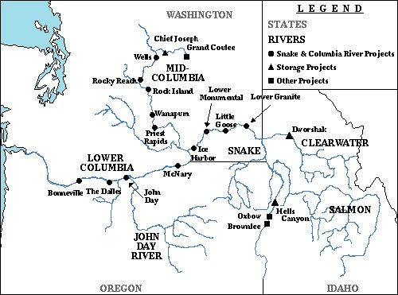
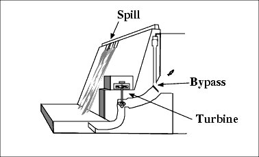

COMPASS models passage and survival of multiple salmon substocks through the Snake and Columbia rivers and their tributaries and the Columbia River Estuary.

Map of Columbia and Snake Rivers
The model recognizes and accounts for the following aspects of the life-cycles of migratory fish and their interaction with the river system in which they live.
Fish survival through reservoirs depends on:
Fish migration rate depends on:
Fish passage through dams depends on:

Cross-section of a dam showing fish passage routes. Fish collected
in bypass systems are returned to the tailrace or transported downstream.